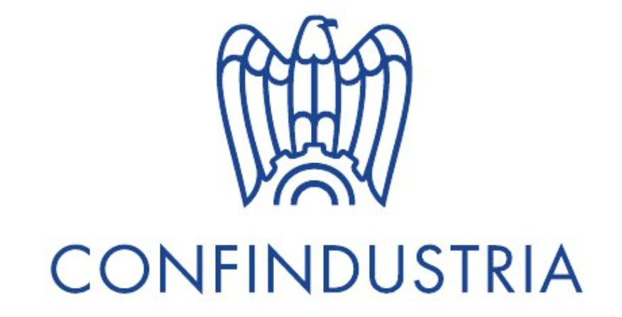
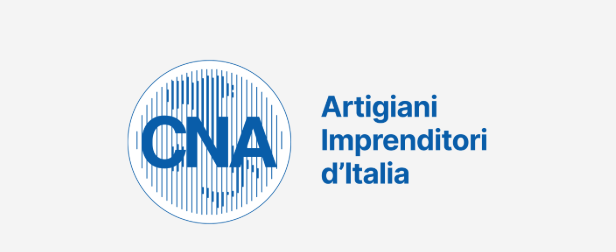
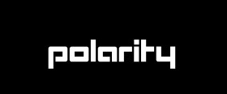

Crescita delle competenze e progetti più complessi

Durante l’attività abbiamo imparato a costruire un curriculum vitae chiaro ed efficace, valorizzando le nostre competenze e esperienze. Abbiamo capito l’importanza di adattare il CV in base al lavoro desiderato. Successivamente ci siamo concentrati sui colloqui aziendali, svolgendo simulazioni pratiche. Abbiamo imparato come presentarci in modo professionale e comunicare con sicurezza. È stato utile scoprire come rispondere alle domande più frequenti. Abbiamo riflettuto anche sull’importanza del linguaggio del corpo e del tono di voce. Inoltre, abbiamo capito quanto sia fondamentale informarsi sull’azienda prima del colloquio.

Durante l’attività abbiamo approfondito le possibilità di lavoro offerte dal nostro territorio. Abbiamo imparato a distinguere le diverse tipologie contrattuali e i principali diritti e doveri dei lavoratori. Ci siamo concentrati anche sulle caratteristiche delle imprese del territorio. Abbiamo scoperto come operano le aziende locali e quali figure professionali sono più richieste. È stato utile comprendere il legame tra scuola e mondo del lavoro nel contesto territoriale. Abbiamo analizzato esempi concreti di realtà aziendali. L’attività ci ha aiutato a orientarci meglio nel mondo lavorativo.

Ci è stato spiegato il funzionamento del processo di selezione del personale, e abbiamo visto l'importanza delle competenze trasversali (soft skills) nel mondo del lavoro. Abbiamo capito quanto siano importanti capacità come la comunicazione, il lavoro di squadra, la flessibilità e la problem solving, oltre alle competenze tecniche. È stato interessante vedere cosa cercano realmente le aziende nei candidati e come distinguersi durante una selezione. Un aspetto importante è stato comprendere che esistono concrete opportunità di lavoro anche subito dopo le superiori, senza necessariamente intraprendere un percorso universitario. Ci è stato mostrato come molte aziende valorizzino le competenze pratiche e la motivazione.
Grazie alle attività svolte abbiamo sviluppato e approfondito diverse competenze utili per il nostro futuro lavorativo. In particolare, abbiamo migliorato la capacità di comunicazione, sia scritta che orale, imparando a presentarci in modo chiaro ed efficace. Abbiamo acquisito maggiore consapevolezza delle nostre competenze personali e professionali. Le attività ci hanno aiutato a rafforzare le soft skills, come il lavoro di squadra e la collaborazione. Abbiamo sviluppato anche capacità di problem solving, imparando a gestire situazioni nuove o difficili. È cresciuta la nostra autonomia e il senso di responsabilità. Abbiamo imparato a gestire meglio il tempo e a organizzarci in modo più efficace. Le simulazioni di colloquio ci hanno permesso di migliorare la gestione dell’ansia e delle emozioni. Abbiamo acquisito competenze nella costruzione di un curriculum vitae efficace e mirato. Abbiamo imparato a valorizzare le nostre esperienze, anche quelle scolastiche. Le attività sui contratti ci hanno fornito conoscenze di base sul mondo del lavoro e sui diritti dei lavoratori. Abbiamo sviluppato una maggiore capacità di analisi delle offerte di lavoro. È migliorata la nostra capacità di adattamento a diversi contesti lavorativi. Abbiamo capito l’importanza della motivazione e dell’atteggiamento positivo. Le esperienze ci hanno aiutato a essere più consapevoli delle richieste delle aziende. È aumentata la nostra capacità di lavorare in modo professionale e abbiamo acquisito maggiore sicurezza in noi stessi. Infine, queste attività ci hanno preparato concretamente all’ingresso nel mondo del lavoro.